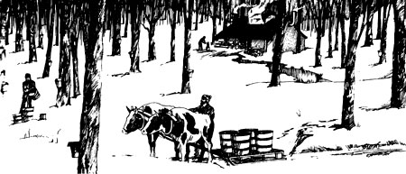

SKY-HIGH, SUGAR PRICES GOT YOU DOWN? "TRY MAKING YOUR OWN." SAYS THIS MICHIGAN
RESIDENT. "IT'S EASY . . . AND FUN!"
One winter day I was splitting logs in the backyard when a man drove up to make a delivery. He looked at the not inconsiderable pile of fuel and said, "What's all this wood for?"
"In a couple of weeks I'll be using it to make maple syrup," I told him.
My visitor thought a moment and then asked, "What do you want to go to all that trouble for? You can get syrup in the stores."
"'I just do it for fun," I said . . . and the delivery man shook his head and climbed into his truck. He probably went away puzzling, the way the hired man in Frost's poem puzzled over the college boy's remark that he "studied Latin like the violin/ because he liked it".
All the same, the reason I gave the curious driver was the truth. It isn't the demands of a sweet tooth or a desire to make money that moves me to tap the maple trees when spring arrives. It's rather a response to an impulse like the one that prompts the Canada goose to lift from the waters of the Mississippi Delta country and wing his way to the breeding grounds around Hudson Bay. Perhaps what drives me is an elemental instinct to produce with my own labor something from the riches of the good earth.
I have sold some syrup, but most of what I make I keep for my own use or give to friends. (I get a smug feeling when they say, "Oh, this is a lot better than the stuff you get in the stores.") And, until the last couple of years, my equipment for this non-profit operation has been simple, frequently of the "make do" variety. I assume that, if you're thinking of following my example, you have somewhat the same point of view. If your purpose is to turn out maple products on a large scale, you will of course consult experts and specialized publications. (For an account of sugaring as a homestead moneymaker, see MOTHER NO. 14.-MOTHER.)
OK, let's start our "sugaring for fun" operation from the beginning . . . with a little background information. First you should know that practically all maple products are made in the northeastern part of the American Continent: in a region east of the Great Plains and north from North Carolina into Ontario and Quebec. Here are found the proper climatic conditions and the greatest growth of the right kind of trees. The sap of the hard or sugar maple makes the best syrup, although an inferior product can be made from the juice of the red maple or the soft (cutleaf) variety.
The sugaring season begins around the first of March, when you can expect the proper weather-cold nights and warm days-and lasts as long as those conditions prevail . . . any where from ten days to six weeks. The sap, however, doesn't flow each and every 24-hour period during that time. There'll be stretches when the days turn cold and operations come to a halt, to begin again when a change in the weather brings on a new "run". Finally the spring turns warm and stays that way, the sweet juice stops rising and the season is over. In any case, sugaring should end when leafbuds appear on the trees because a chemical change takes place at that point and the sap no longer makes good syrup.
How do you know for sure when the maple sap is ready to gather? Let's say that-some night in late February or early March-the temperature is below freezing as you go to bed. Then, during the night, the wind changes and you wake up to find the mercury climbing, the snow melting and the sun coming up in a clear sky. The "run" has begun and you must be up and doing.
Sap is extracted from the sugar maple by "tapping", which means boring a hole in the trunk of the tree to cause a flow of juice. This process does no harm unless the tree is too small-it should be at least a foot in diameter-or the number of holes excessive. (A twelve-inch trunk can take only one taphole, but you can hang two buckets on an 18-inch tree, three on a 24-incher, and so on.) In a normal season the yield from each tap usually runs from two to four pints of syrup.
To tap a maple you need a brace and a 7/16-inch bit, with which you bore a hole in the tree about breast high and two to three inches deep. Although the location of the taphole doesn't really matter in the long run, you'll get the quickest results by drilling on the south or sunny side of the trunk. When the warming influences take effect the sap begins to flow (not literally . . . it comes in drops, sometimes in pretty rapid succession).
The Indians and early settlers used to cut two gashes in the tree to form a "V" and stick a twig or chip at the bottom point to direct the sap into a collection pail. Since you're using the less damaging method of drilling holes in the trunk, you must insert a tube into each opening to direct the juice into a receptacle of some kind. Spouts (also called "spiles") are available commercially. If you'd rather create your own equipment, however, you can make your spiles by removing the pith from short lengths of stick. I've used sumac, mullein stalks, bamboo and willow for this purpose. The store-bought spout has a hook on which to hang the bucket, but a nail driven into the trunk just above the tube does just as well.
The sap container can be a tin can, a Mason jar with a wire twisted around the neck or any ordinary bucket or pot. Its contents should be protected by some kind of cover . . . not absolutely essential, but without it rain and snow will dilute the sap and-along with twigs, dust and insects-will affect the flavor of the syrup and impair the desirable light color. You can make lids for your receptacles from tin or plywood.
No matter how simple or how elaborate your equipment may be, and no matter how much sap you work with-from one tree or fifty-the basic process of sugaring is one of evaporation. This operation should be started when a few gallons of raw material have accumulated . . . as soon as possible after the sap flows into the pail. Of course, you'll always have a supply waiting to be fed into the evaporator-a galvanized waste can does very well as a holding tank-but the juice spoils if left standing too long, especially in warm weather.
Maple sap is 97% water and 3% minerals in solution. Boding reduces the juice's water content and brings out its color and flavor. Since it takes 30-60 (the average is around 40) gallons of sap to make one gallon of syrup, you have a lot of evaporating to do . . . and you'll need matching amounts of fuel, patience, vigilance and time.
A hint: Don't boil your sap in the house unless you have a fan over the stove. Otherwise the clouds of steam that billow up will peel the wallpaper and soften the walls. Better do the job outdoors . . . under cover if you can, because you'll have wind, rain and snow to contend with. At least a windbreak is helpful.
For a fireplace ("arch" is the proper sugaring term) an outdoor grill will do, or you can lay up a structure of bricks or cement blocks. I've made one of fieldstone and banked it with sand and dirt. The dimensions, of course, depend on the size of the evaporating equipment you use. At any rate, be sure your arch will produce a good strong draft . . . rig up a stack if you can. I've used a section of draintile for this purpose. (A plan for homemade evaporator and arch appears in MOTHER NO. 14.-MOTHER.)
The evaporating process is the heart and soul of the sugaring operation and your close attention must be devoted to maintaining a strong, steady fire. The big operators use wood, gas or oil for fuel. You'll probably bum wood-well seasoned hardwood such as oak or maple is best-and you must be prepared to use a lot of it. Perhaps you can arrange to feed your arch with scrap lumber and slab wood from a sawmill.
And how about the evaporator itself? The Indians boiled sap by dropping hot stones in the liquid, which was held in a trough gouged out of a log. When the white man came along,
the process was made more efficient by the use of an iron kettle set over the fire on stones or suspended from a tripod or tree branch. A further improvement was the flat pan, which provided a larger evaporating area and thus speeded up the business. Over the years the commercial producers have added still more new wrinkles . . . but until very recently my own containers were much like those the pioneers used.
My first evaporator was a deep copper washtub . . . and, novice that I was, I began by filling the container nearly to the brim. It seemed that my supply of wood was going to be exhausted before the first wisps of steam began to rise from the surface. That taught me to keep the level of the sap low (about two inches deep). As evaporation proceeds, the depth is maintained by adding liquid in small quantities so as not to slow the boiling.
The copper vat was succeeded by a 20-gallon washtub, a slight improvement. Then, when I had the opportunity to make use of an abandoned sugarbush, I had a couple of pans made of heavy-gauge tin: one 18" X 36", one 18" square . . . and both 6" deep.
Why two pans? Because, if you use only one receptacle and add a little sap from time to time, most of the contents boils all day long and loses flavor. If you have two or more pans or kettles, however, you can add fresh liquid to the first, ladle from that to the next . . . and so on until you "syrup off" from the last container.
The size of the evaporator will depend on how much sap you gather . . . that is, how many buckets you hang. The outfit I used could handle the contents of about 30 pails. When circumstances limited the scope of my operation I used only one of the pans.
While sap is boiling, a white scum forms on the surface. Although it's not strictly necessary to remove this waste, you'll get a cleaner product if you do. Just scoop it out with an ordinary fine-mesh kitchen strainer and rinse the strainer off in a pail of water.
Now a word about vigilance: Watch the evaporator like a hawk! The sap has a tendency to boil over . . . and does so in a huffy, especially when it approaches the syrup stage. The devastation created by an overflow of hot, sticky liquid is awesome. Fortunately, it's also unnecessary.
When the foam begins to climb the sides of the pan you can use any one of several methods to make it behave. For instance, pour in a little fresh sap and the contents of the pan will sink back down. A few drops of cream or whole milk sprinkled into the frothing mass will also make it subside like magic. Or you can resort to the old-time sugarmakers' method: Tie a piece of fat to the end of a stick and draw it across the top of the bubbles.
How do you know when you've reached the moment of truth . . . the point at which that bubbling, seething liquid becomes syrup? There are several methods of testing. One depends on the fact that when maple syrup reaches its correct density-exactly 11 pounds to the standard U.S. gallon-it boils at seven degrees above the boiling point of water. Altitude and atmospheric conditions at the time of measurement influence this, of course, but a thermometer reading of 219° F will be accurate enough.
Another test is by hydrometer. The hot syrup is poured into a container and the instrument-a weighted glass tube-is lowered into the liquid. If it floats at a certain level (marked on the glass), the sweetening is ready to be drawn off and canned.
Even without instruments, veteran sugarmakers can judge their sap's progress quite accurately by the look of the bubbles and the way the syrup "aprons off" a wooden paddle or tin scoop.
On my first few attempts at syrup making I tried to test the product by the flavor, and found that after a while my overworked taste buds weren't much help. Nevertheless, you can make a fairly accurate guess this way if you also note the liquid's color and state of fluidity. Whatever trick you use, it's important to be sure the syrup has reached standard weight. The cooked sap will sour if it's too thin, and crystallize-deposit a sort of rock candy at the bottom of the container-if it's too thick.
Boiling sap brings out a surprising amount of foreign matter (some if it resembles fine beach sand). You'll want to remove these impurities when you draw off the syrup. A piece of flannel or a double thickness of dish towel material held with clothespins over the top of pail or milk can will serve very well as a strainer . . . or you can clarify the sweetening by leaving it to settle.
To keep its flavor, syrup should be canned or bottled hot and kept in a cool place. It will deteriorate rapidly if exposed to the air.
Some people think, incorrectly, that thick, dark maple syrup is "the real thing". Tastes differ, of course, but the fact is that such sweetening is the product of late-run sap or juice from the wrong kind of maple . . . or of equipment that isn't overly clean. This subject is regulated by strict government standards: "Fancy" grade syrup is the color of light honey, "A" grade a little darker, "B" a shade darker than "A" and "C" the darkest of all. All grades are of standard weight or density.
Once you've made syrup, you may want to try your hand at maple sugar. The process involves further evaporation . . . and thus more firewood, patience and vigilance (plus, of course, the happy element of anticipation). A gallon of syrup minus three pounds of its water content will make eight pounds of hard or "cake" sugar. The contents of your kettle will reach this stage at about 242° F, 30 degrees above the boiling point of water. A softer product requires less reduction and is cooked to a lower temperature of 237° F.
A simple test for the hard sugar stage is to dip a spoon in the boiling syrup and let the liquid drip back into the pan. If it "hairs off" (forms a fine, spidery thread) I figure the batch is ready. I remove it from the fire and set the syrup aside to cool for a few minutes, then stir it with a wooden spoon to give the result a finer grain. When the mass begins to crystallize-a phase that comes on suddenly-I pour it into lightly greased forms and let it stand. I happen to own some antique tin sugar molds, but an ordinary muffin pan will do very well.
When the subject of making maple sugar comes up, quite often someone will talk nostalgically about "sugaring off" or "sugar on snow". If you'd like to taste this treat, fill a pan or bowl with fresh, clean snow. Thicken a supply of syrup by additional boiling as explained above, dip out a spoonful and spread it on the cold surface. It will sink in a little and congeal to the consistency of wax. Roll the blob up on a fork and pop it into your mouth to enjoy an exceedingly tasty confection. At sugaring off parties a supply of pickles and doughnuts is kept on the table for you to munch on at intervals to recondition your taste apparatus for another go at the "maple wax".
Most of what I've told you about sugaring has come to me by the trial and error method, and by talking with New England and Michigan friends who have been at the business for years. I've also learned from publications, in particular Helen and Scott Nearing's The Maple Sugar Book (originally published by John Day and recently reprinted by Schocken Books, Inc., of New York . . . available in paperback for $2.50 and in hard cover for $5.95). This work is not only a mine of information about maple products but an inspiring account of how two people learned to make their living off the land. Another excellent source is USDA Bulletin No. 146 (Superintendent of Documents, U.S. Government Printing Office, Washington, D.C. 20402). Information about sugaring equipment can be had from the Grimm Manufacturing Company, Rutland, Vermont 05701 and the Leader Evaporator Company, Saint Albans, Vermont 05478. These firms can, of course, supply you with the names of dealers in your area.
One more word about equipment: If you want to go in for sugaring amateur style-as a comparatively small operation, for fun-but with more sophisticated equipment than I've described you can get a small up-to-date evaporator complete with arch and stack . . . a miniature edition of the big commercial rigs. These models are about 2' X 6' and will handle 50-150 bucketfuls of sap. To go with this setup you'll need a gathering tank, storage tank, filters, scoops, skimmers and testing instruments. You'll also need a helper, because operating on this scale is a two-man job.
Now that I'm retired and have more time to devote to sugaring-as well as a partner to work with-I've acquired such a "hobby" outfit. The first time it went into operation, and the steam billowed up and the automatic controls got to work, I felt like a kid riding his first twowheeler.
Still, you don't need fancy gear to enjoy the maple season. Somehow, even if rain, snow, ashes and soot fall into the bubbling batch and the smoke gets in your eyes-and even if you've been casual about the whole thing-somehow the syrup tastes good . . . because it's a harvest you've reaped yourself from the bounty of Mother Earth.
|
 |
|
|